Assignment 5 report Team: Music Band | Group: SE-2501
Objective: Continue the Cold Carti fan website with an interactive release collection, keyboard controls, a two-step form, sound and animations.
1. Covers, text and ratings Find the cover, title and rating controls with DOM selectors. Click a thumbnail to change the large image's src, alt, title and year. Click a star to set a rating and update its color and text. 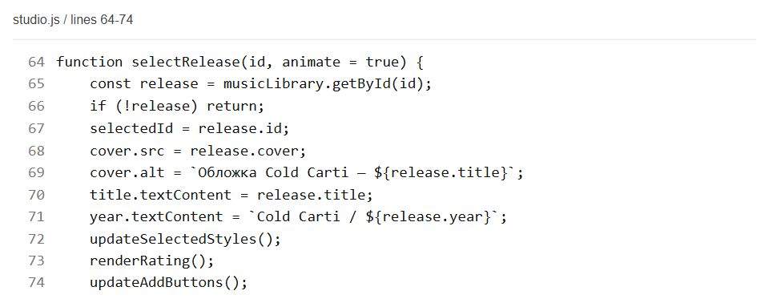
Code excerpt: studio.js, lines 64-74. 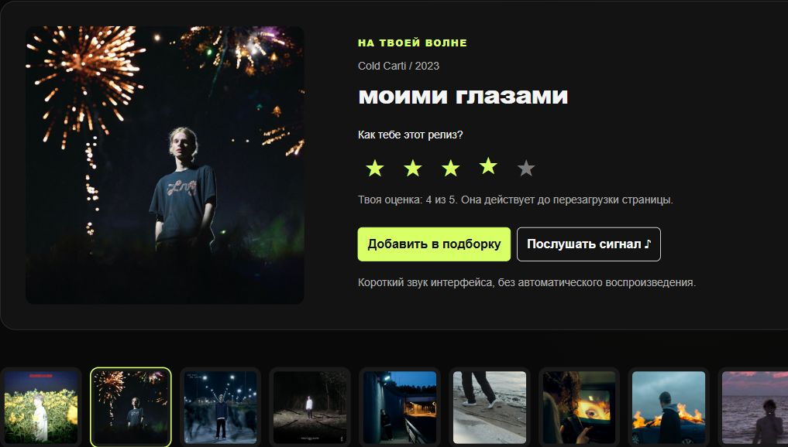
The selected cover and its rating update on the Studio page. Files: studio.html, studio.js, studio.css
2. Keyboard events and switch Listen for keydown while a navigation link has focus. Use switch to move focus with arrow keys, Home and End. Use another switch in filterByYear() to choose releases for a supported year. 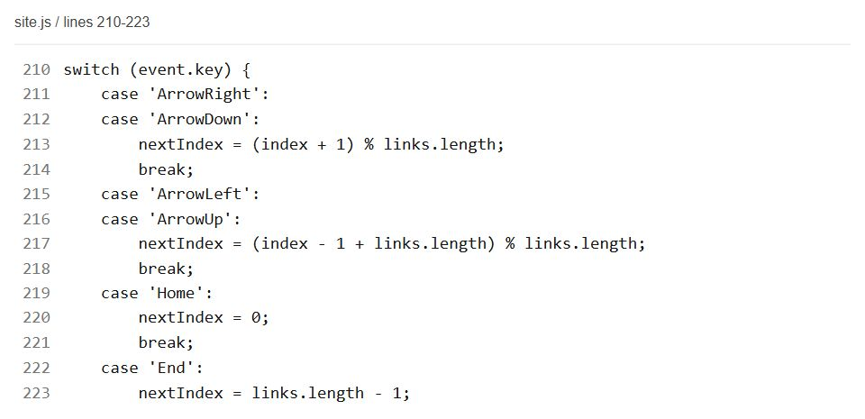
Code excerpt: site.js, lines 210-223. 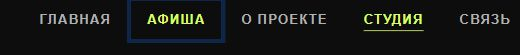
The navigation menu can be used with the keyboard. Files: site.js, music-library.js
3. A two-step form and callback Keep the contact fields in two steps and validate before Next. Pass renderFormStep to goToStep() as a callback to show the chosen step. Keep field values when moving Back, and show a local result after the final check. Reject malformed email characters in both forms before allowing progress. 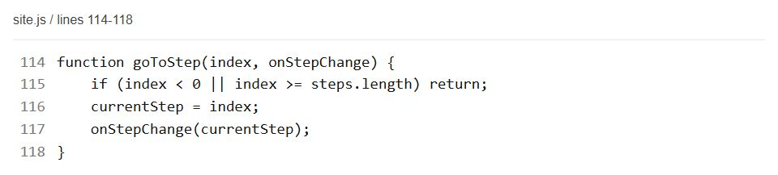
Code excerpt: site.js, lines 114-118. 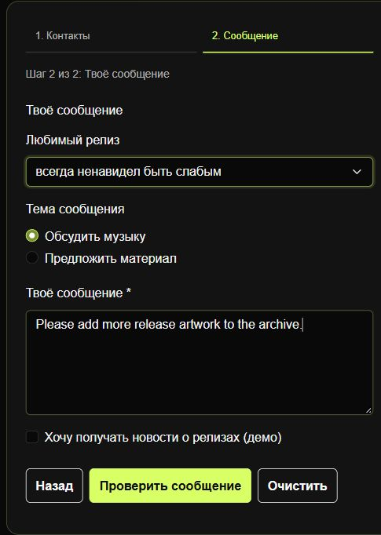
The second step keeps the data entered earlier in the form. Files: contact.html, site.js, style.css
4. Objects, arrays and functions Store release objects in a catalogue array and manage selections through collection methods. Filter the array by year and search text using callback functions. Build the resulting cards with a for...of loop, then update the collection without reloading. 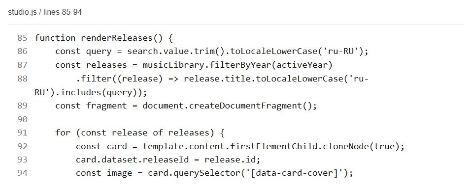
Code excerpt: studio.js, lines 85-94. 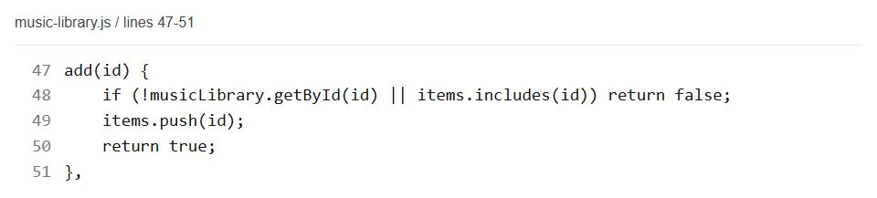
music-library.js: collection object methods. 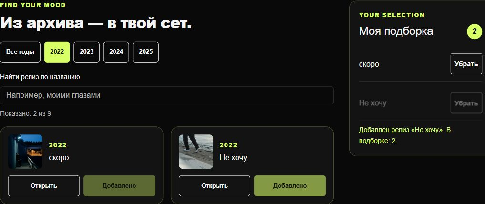
Filtering changes the visible releases; added items appear in the collection. Files: music-library.js, studio.js, studio.html
5. A sound effect Connect the sound button to a short local WAV signal. Pause and restart one audio element so repeated clicks do not create overlapping players. Display playback feedback and handle a failed play() call. 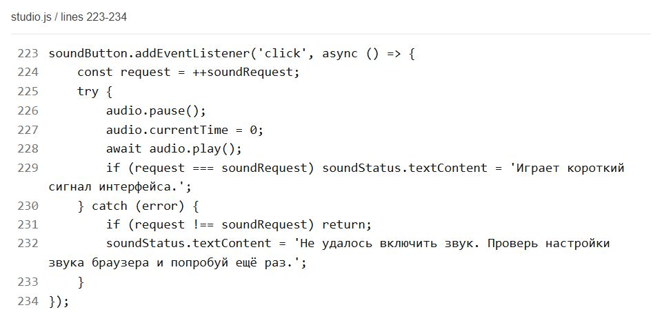
Code excerpt: studio.js, lines 223-234. The sound button plays an interface signal and shows its status. Files: studio.html, studio.js, assets/audio/archive-chime.wav
6. Animation, structure and usability Animate a cover when it changes and highlight a newly added collection item. Keep HTML, CSS, data and behavior in separate files with named functions. Support small screens, visible keyboard focus and reduced-motion preferences. 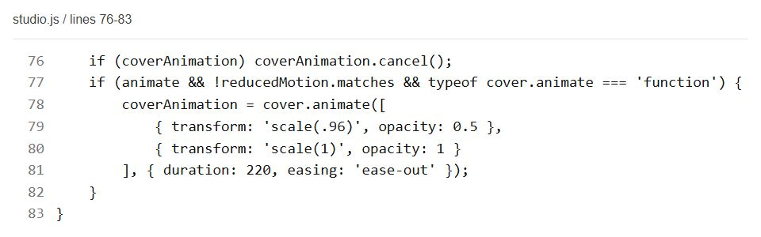
Code excerpt: studio.js, lines 76-83. 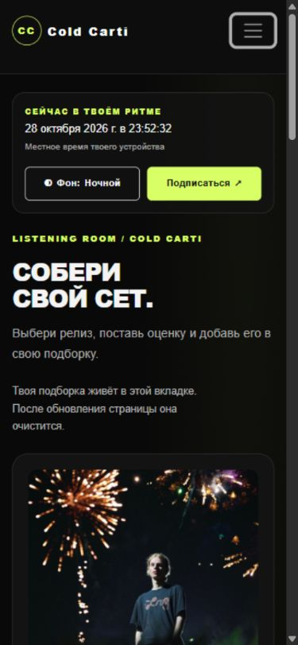
The Studio page also fits a mobile screen; cover changes use a short animation. Files: studio.html, studio.css, music-library.js, studio.js, site.js
Checks and reflection JavaScript syntax checks and the static link checker passed. 14 automated tests passed: 5 collection tests and 9 email validation tests. Chromium: 30 layouts across six pages at 320, 390, 768, 992 and 1440 pixels; no horizontal overflow. Checked gallery, ratings, year/search filters, add/remove, arrow navigation, form steps and reset. The 0.42-second local sound played and ended; repeated clicks reused one player. The reported comma-only email and similar malformed addresses were rejected in both forms. 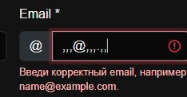
The comma-only address is rejected in both forms. Challenges and solutions A form error can belong to a hidden step. Show that step before moving focus to its first invalid field.
Repeated sound clicks need to stay clear. Reuse one audio element, pause and restart it, and ignore feedback from older playback requests.
The shared script runs on several different pages. Check that a component exists before initializing its controls.
Reflection The new features connect JavaScript data with visible controls. Keeping data, page structure and appearance in separate files makes the code easier to change. Forms are local demonstrations; collections and ratings are cleared on reload.
Website https://kanatovs.github.io/music-bandv3/ Open the Studio page
Tested in Chromium with simulated widths. Firefox, Safari and physical devices were not tested. Prepared on 28 October 2026.
Kanatov Sabyrzhan / Zhaxylyk Alikhan / SE-2501